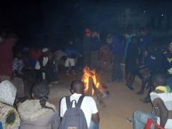
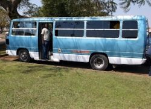
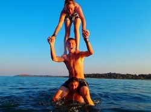
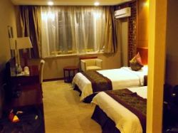

A group of 15 explorers set forth into Malawi, this is the tale.
Here is an account of our experiences.
Mzuzu - Thomas Holmes
During our visit to Malawi we went to Mzuzu for the whole day twice, both times with the scouts from 1st and 2nd Mzuzu. During the time we had there it showed me some of true life in Malawi compared to my own. I saw this when the Malawian scouts took us to their homes and presented us to their parents. There homes weren’t fancy or elaborate but the basics they needed to live there with few precious luxuries such as a TV with the music channel always on. The first time in Mzuzu we were in groups of six. My group was myself, Dan, Matt from First Poulner and Nelson, Bright and Mike from Mzuzu Scouts. The second time we had half a day with the scouts and half a day on our own. In which we went to the internet café, food stalls and to the market where Robin bought his legendary jacket and Myself and Dan bought nearly six litres of cherry plumb to take back home.
Kavuzi campsite - Robin Watts
Kavuzi campsite was a great site for scouts. It had all the essential facilities and more. It was easy to access via public transport and the atmosphere from the Malawian scouts was excellent. One downfall was the hill from the tent area to the toilets. A monster to tackle in particular while ill... in a rush. The foundations for the dam will be useful for any scouts as it can be used for a variety of purposes and was a lot of fun to play in!!! The games area was not only used for flag break, but also games such as football which was really enjoyed.
Overall I enjoyed my stay at Kavuzi as it had all the facilities and activities for a pleasant and adventurous day.
Campfires - George Drayton

The fire at Kavuzi was kept going all through the day and night as the Mzuzu scouts needed it for their meals throughout the day as well as the evening camp fire when songs and stories are shared and being with Colin and Dave we had plenty of both. The scouts at Mzuzu had many songs that helped us to learn names such as coma toza toza which we all had good fun singing and it’s a much easier method of learning their names than just repeating them. At Bandawe/Chinteche we had a campfire on the beach which was a high point as the stars were out in force thanks to the low level of light pollution by the lake. At the lake we learnt a song/game oh chico chico? (guessing the name) which was fun to play in big groups as everyone is involved. All in all the camp fires on this trip brought the groups together and were really enjoyable.
Mzuzu Scouts - Sammy Hobbs
Starting off the trip with the Mzuzu scouts was an amazing experience and a great way to get a first impression of Malawi. It was very easy to get along with them as they were roughly the same age range as us; also they all had good English language so communication with them was a lot easier. It was great to have them waiting at Kavuzi camp for us when we arrived as they greeted us very friendlily and were keen to help us down the hill with our luggage.
We shared so many great times together with the Mzuzu scouts especially at Kavuzi camp but also on our day trips to Mzuzu town and meeting their families. Having them show us what typical Malawi people eat daily was very interesting as they did not laugh at us when we tried eating with our hands, they just helped us. Playing games on the football pitch at Kavuzi was a great way to get to know the Mzuzu scouts and to "break the ice". However probably the best moments we shared with the Mzuzu scouts had to be round the campfire, having a laugh and learning each other’s songs.
Each of the Mzuzu scouts had different skills, knowledge and ways of doing certain things which they were all keen to share with us, for example dancing was something which they all seemed to love doing. Overall our time with the Mzuzu scouts was a huge success and we will most definitely miss them.
Food - Jack Kebby
The food we ate lacked nutritional value so many of us got tired and hungry a lot. Being so hungry made most meals feel like a godsend. While travelling back we were all ecstatic about having Mcdonalds and other calorie rich foods. Samosas were a favourite for most as they were fat fried. Most were home-made and bought from the roadside.
Bella Vista & Bongolo scouts - Tom Hasted
Meeting different people and seeing how people live was an experience. Parts of working with the Bongolo scouts were hard, with the language barrier. Teaching basic compass skills was fun, as each scout gave it a really good go. What was strange was that most of the scouts had never been swimming in the lake.
Desk and Playground Building - Ross Stevens
1st Poulner Mountain Explorers are famous for making desks for the local schools in Malawi. But this year we wanted to make a sick playground for the school children. We thought that most of the children would have never seen a playground let alone played in one. Our plan was to have a stepping stone snake and two different types of swings. We used chunky pioneering poles, the poles we had to cut had to be a good ft. out of the ground and a good 3ft into the ground so they would be sturdy and last a couple of years. When we were digging into the rock hard ground I was surprised that the Bella Vista scouts were using machetes to dig.
The first design of swing was a rotational swing. The structure of it was 3 straight bamboo poles joining at the top lashed together and dug into the ground an arm's length. This swing was made for very young students. But the second swing was a basic every day swing which goes backwards and forwards. The structure of this swing was two triangles dug an arm length again into the ground with one main support pole going across the top all lashed together.
The playground was a big success as the next day all the school children were laughing and having lots of fun with the equipment.
Jamboree - Dan Anderson
This was a mixed experience for me, the wet seat myself and Robin shared for the 8 hour bus journey turned out to be from liquid of a more processed nature than water! The result of this, the wasteland of a campsite and a lack of a roll mat gave me my first low of the trip...
However it is perhaps in our hour of need that our friends show their true colours. My fellow explorers rallied around me, I had a good meal and I stayed up late to stargaze with leaders and some explorers and there was some top class Poulner banter, including the vandalisation of an irritating light *cough* Craig...
The following morning I felt a little better, we had a look around the place and met some scouts from Sweden and Norway. While we were quite disgruntled as a party, I dread to think how this lot felt, they had flown in for this! Some marquees and a wasteland.
Finally the opening ceremony, we didn't necessarily enjoy it, but we made the best of it. A band was hosting a sort of lower body dance contest. Chucky stepped up and produced a multitude of magnificent moves which none of us will ever forget. Later on all of us along with most of the crowd raved and gyrated to a particularly lively African tune. The Jamboree was then rounded off by some marches/presentations from different youth groups, all with a common message of youth empowerment in Malawi. The excitement then hit a new level as we were treated to rousing speeches from 3 treacherous buzzards, I mean, 3 honourable ministers. Then we bailed!
Transport - Scott Garner

Transport in Malawi can be described with a few different words. Inventive, unpredictable as to the timings, and cramped. They would convert a normal small van into a bus, certified to carry a certain amount of people (plus a few more). The general rule is if there is enough room to fit 4 and a half people on a row, then you will have a 5th person joining you if all the seats are taken. They will also make use of pick-up trucks for public transport. During one of our trips into Mzuzu, one group had to use a pick-up truck to get back to Kavuzi campsite. Apparently it had 21 people sitting in the back and it was said that one of the explorers couldn't been seen except for his eyes and forehead.
Our own private bus was bigger than the standard public transport but as we were a large group with a large amount of kit it was very cramped as times. It is safe to say that getting transport in Malawi would be an unwise decision if you are claustrophobic, which unfortunately was bad news for me. The transport may have been cramped most of the time but I feel like it was reasonably priced (when we asked for the mfipa price) and it was certainly an experience. Many of us made comments that we wouldn't complain about public transport at home but I do have to say, without those cramped buses where would we be? Plus some of the drivers were really good by slowing down at the appropriate times and by not pushing their vehicles too far.
To sum up: Transport in Malawi was cramped but reasonably so, was reasonably priced and when you have the right driver was a pleasant experience. But if you suffer from claustrophobia, you're better off riding on the seats over the back wheels or the public transport bicycles, which were surprisingly comfy.
Vwaza Marsh (animals) - Kieran Evry
4 hours travel from Mzuzu in our bus not so cramped because we dropped off our main bags at Kavuzi but still had our sleeping bags, mats and tents and our day bags packed with overnight stuff. We got to Vwaza at about 3pm, tried to put up tents but ground so hard pegs had to be hit with rocks to get them in. We had made our camp so that we got two rooms near the water. We saw lots of hippos, a termite mound, some impala, bushbuck and kudu. We went back had chicken and rice had a fire and went to bed. Woke up early-ish to Dave telling us to be silent so we don't scare the animals. Had breakfast, got split into two groups which started at different points. Saw more hippos impala and a marsh eagle and more termite mounds and an ant trail. Came back to base saw some hippo skulls and some elephant skulls and some horns. Had eggy bread, put tents down and went to look for elephants on the bus but did not see any.
Animals were:
Hippos
Impala
Bush buck
Kudu
Lots of ants (some big)
Spiders
Lizards
Mosquitoes
Chickens
Goat
Eagles
Cows
Lake Malawi and Bella Vista - Adam Rickman
Bella Vista was many people's favourite destination in the trip, with the lake right on our doorstep and the warmer climate. Most people got excited simply by seeing the clear waters of the lake rather than the muddy waters found in Kavuzi, which almost seemed like an entirely different country in comparison to what seemed like a tropical paradise at Bella Vista. Most people went swimming in the lake at least twice, sometimes even three times a day, however when evening came around you weren't allowed to go swimming unless you wanted to get eaten by crocodiles, so instead many of us led out on the beach stargazing and watching the many lights of the fishermen bobbing out in the lake, usually about 50 lights each night. Near to where we were staying was a building many of us went to almost every day and it was called Sambani Lodge, where we could buy Cherry Plum and other drinks, and as there were no rocks at Sambani, the waves were even bigger and more frequent than at Bella Vista, which were already quite big. Sambani was also where we had a party with the Bongolo and Bella Vista scouts on the last day of our stay there. Without a doubt Bella Vista was one of the best parts of the trip.
Water Activities - Matt Rollett

At Kavuzi campsite there is a river. In this river we made a removable dam so it is now easy and quick to dam the river. Also because the river is fast flowing the dam will fill in half an hour. The water is quite cold and murky but it still is a nice place to splash around.
At the lake you can go for an early morning swim and have a quick wash. The lake water is really warm and it is not salty. The lake looks and feels like the sea. It is also shallow for quite a long way out so there is plenty of space to splash around. Sadly on our trip we did not get to go fishing because the waves were too big but it may be a possibility.
Golden Peacock Hotel - Annie Hopper

Well what can I say? As soon as the minibus pulled up at this amazing lit up hotel everybody was screaming like little girls! 4 star facilities, way too much Chinese food to consume by ourselves and brilliant rooms. Everyone particularly made great use of the phones in each room. I myself took a liking to the toilet facilities given it was my turn to have the squits and vomiting as well.
Colin however, didn't take to it as much as we did, he would have preferred a nice 4 star tent + sleeping bag instead.
Going to the hotel really made everyone's day given our current situation at Nairobi airport! All our lovely, dirty, large, carving and cherry plum filled bags were carried to our rooms by porters! The swimming pool was great, definitely woke me up for the next 3 hours.
Jack loved the coffee sets in the rooms, Adam loved the phones, Tom blew up his hair drier + Ross took a liking to everyone's door bells.
What I Will Miss Most About my Trip to Malawi - Jamie Binks
The people and friends we met especially Christer, Gift (Bopeia) and Hope. They made us feel so welcome and were always cheerful and pleased to see us. Waking up in the morning and opening your tent, overlooking the lake with the sunrise was just amazing and to be able to just run down the beach and go straight in was so nice and refreshing. The football match against the local team was just amazing, some of their players played without shoes on, but yet they still managed to defeat us 5-1 and even though our team lost everyone was still so happy. Cherry plum is the best drink they had and it’s a shame it’s so hard to find anywhere else, it just gave us such a good sugar rush and it tasted so amazing it’s something I will definitely miss.
One thing I won’t miss is the walk up the hill to the toilets at Kavusi!!